Transforms and Shapes
Unlike windows and canvases, transforms and shapes are not platform specific. The OpenDoc objects that represent them may encapsulate platform-specific structures, but they also give added capabilities. This section discusses how you use transforms and shapes to position and clip embedded parts for drawing.Transforms and Coordinate Spaces
Both frames and facets employ transforms. It is useful to discuss them in terms of the coordinate spaces they define.In OpenDoc, an object of the class
ODTransformis a 3 3 matrix that is used to modify the locations of points in a systematic manner. OpenDoc transforms support the full range of two-dimensional transformations shown in Figure 4-2.Figure 4-2 What a transform does
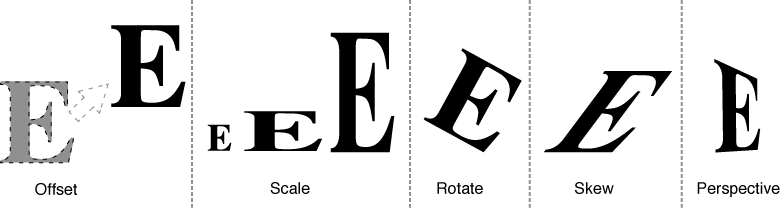
Not all graphics systems support all the features of OpenDoc transforms. Some graphics systems support only offset, or translation, of points; others support offset plus scaling; still others support all transformations. Depending on the graphics system your part editor uses, it may have to do extra work on its own to support features such as scaling or rotation. In such a case, you can create a subclass ofODTransform, if desired, that adds those features or even other, more sophisticated transformational capabilities. See "Custom Transform Objects" for more information.A transform can be thought of as defining a coordinate space for the items that it is applied to. OpenDoc uses transforms to convert among two kinds of coordinate space: frame coordinate space and content coordinate space.
Frame Coordinate Space
The frame coordinate space is the coordinate system defined by the specifica-
tion of the frame shape. The frame shape is the basis for the layout and drawing of embedded parts. Suppose, for example, that a frame shape is defined as a rectangle with coordinates of (0, 0) and (100, 100). In a coordinate system with the origin at the upper left--such as that used by QuickDraw and QuickDraw GX--the shape would appear as shown in Figure 4-3.Figure 4-3 Frame shape (in its own frame coordinates)
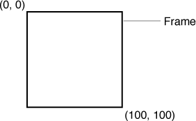
All shapes and geometric information passed back and forth between embedded parts and their containing parts are expressed in terms of the
frame coordinate space.The shapes describing the facet associated with a frame are described in the same coordinate space as the frame; that is, they are in frame coordinates. Thus, in this example, if the clip shape of the facet corresponded exactly to the frame shape, it would have identical coordinates: (0, 0) and (100, 100).
Content Coordinate Space
The content coordinate space of a part is the coordinate system that defines locations in the part's content area. It is the local coordinate space of the part itself, and--again, assuming the coordinate systems used by QuickDraw and QuickDraw GX--typically has its origin in the upper-left corner of the part's content.The internal transform of a part's display frame defines the scrolled position (as well as the scaling, rotational, and skew properties) of the part's content within the frame. Applying the display frame's internal transform to a point in content coordinate space converts it to frame coordinate space. Conversely, applying the inverse of the internal transform to a point in frame coordinate space converts it to content coordinate space.
For example, suppose that Figure 4-4 shows the entire contents of a part, and that a portion of it is to be displayed in a frame. If the part's display frame has the dimensions shown previously (in Figure 4-3), and if the frame's internal transform specifies an offset value of (-50, -50), the frame will appear in relation to its part's content as shown in Figure 4-4. Only the portion of the part within the area of frame shape will be displayed when the part is drawn.
Figure 4-4 Frame shape (in content coordinates of its part)
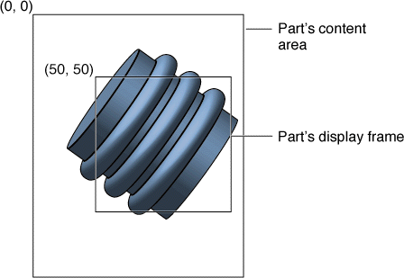
Application of the internal transform in this case means that a point at (50, 50) in content coordinates--the upper-left corner of the display frame--is at (0, 0) in frame coordinates. Conversely, a point at (-50, -50) in frame coordinates is at (0, 0) in content coordinates.Transformations other than offsets are applied in the same manner; you can scale, rotate, or otherwise transform the contents of the part within its frame by applying the frame's internal transform.
Converting to the Coordinates of a Containing Part
Just as the internal transform of a frame defines the scrolled position of the content it displays, the external transform of that frame's facet defines the position of the frame within its containing part.Applying the external transform of a frame's facet to a point in frame coordinate space converts it to the content coordinate space of the containing part. For example, suppose that the facet and frame of the embedded part in Figure 4-4 have the same shape, and suppose further that the facet's external transform specifies an offset of (150, 75). In relation to the containing part's content area, the embedded part will appear as shown in Figure 4-5.
Figure 4-5 Frame shape (in content coordinates of its containing part)
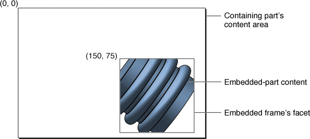
In this case, applying the external transform causes a point at (0, 0) in embedded-frame coordinates--the upper-left corner of the embedded part's frame--to be at (150, 75) in containing-part content coordinates.(Conversely, applying the inverse of the embedded facet's external transform to a point in content coordinate space converts it to the embedded frame's coordinate space. Thus, in Figure 4-5, a point at (-150, -75) in embedded-frame coordinates is at (0, 0) in the content coordinates of the containing part.)
Transformations other than offsets are applied in the same manner; you can scale, rotate, or otherwise transform the embedded part and its frame within the containing part by applying the facet's external transform.
To convert from the content coordinates of an embedded part to the content coordinates of its containing part, therefore, you need to apply two transforms: the internal transform of the embedded part's display frame, followed by the external transform of that frame's facet. For the example shown in this section, you can see by inspection that the point (50, 50) in the content coordinates of the embedded part (the origin of its display frame) becomes the point (150, 75) in the content coordinates of the containing part. You could also calculate that the point (0, 0) in the content of the embedded part (its upper-left corner) becomes, by application of both transforms, the point (100, 25) in the content of the containing part (outside of the embedded frame and therefore not drawn).
You are not usually concerned with your embedded part's location within the content area of its containing part. You are, however, always interested in your content's location--and your frame's location--on the canvas or in the window in which your part is drawn, as described next.
Canvas Coordinates and Window Coordinates
When your part draws its contents, or when it draws adornments to its frame such as scroll bars, your part is responsible for properly positioning what it draws on its canvas. In setting up the canvas's platform-specific drawing structure, you need to provide information that tells the canvas where, in terms of its own coordinate space, your drawing will take place. OpenDoc doesn't do that for you automatically. It does, however, provide methods that make it fairly simple.If you were to start from your part's content coordinate space and traverse the embedding hierarchy upward, applying in turn your part's internal transform and external transform, and then applying each internal transform and external transform of each containing frame and facet, up to a facet with an attached canvas, you would arrive at the canvas coordinate space or the window coordinate space in which your part is drawn.
Figure 4-6 shows a simple example of converting to canvas coordinates and window coordinates. The containing part and the embedded part are the same ones as shown in Figure 4-5, and the containing part is in this case the root part of the window. The internal transform of the root frame (the containing part's display frame) specifies an offset of (-50, -50), and the external transform of the root facet is identity.
- If there are no offscreen canvases in the facet hierarchy, the canvas coordinate space is exactly the same as the window coordinate space; to calculate it, OpenDoc applies all transforms up through the internal transform of the root frame. This coordinate space corresponds to the device coordinates of the window canvas. In QuickDraw, for example, it corresponds to the local coordinates of the port in which you are drawing.
- If one or more offscreen canvases are in the facet hierarchy, the canvas coordinate space corresponds to the frame coordinates of the first part above yours in the hierarchy whose facet has an attached canvas. To calculate it, OpenDoc applies all transforms up through the internal transform of the frame whose facet has the canvas. The window coordinate space in this case is unaffected by the presence of an offscreen canvas; it is still defined by the device coordinates of the window canvas.
Figure 4-6 Frame shape (in canvas coordinates and window coordinates)
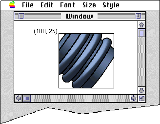
Converting content coordinates to window coordinates means concatenating all the transforms up through the root facet's external transform. Assuming there is no offscreen canvas in Figure 4-6, the point (50, 50) in content coordinates (the origin of the embedded part's frame, as shown in Figure 4-4) becomes the point (100, 25) in window or canvas coordinates. If there were an offscreen canvas attached to the embedded facet in Figure 4-6, the canvas coordinates for the origin of the embedded part's frame would
be (0, 0).Normally, you do all your drawing in canvas coordinate space. That way, whether or not you are drawing to an offscreen canvas (which you might not control or even be aware of), your positioning will be correct. However, when you need to draw directly to the window to provide specific user feedback (as described in the section "Drawing Directly to the Window") you need to work in window coordinates.
By concatenating the appropriate internal and external transforms, OpenDoc calculates four different composite transforms that you can use for positioning before drawing:
For a description of how to use these transforms when setting up for drawing, see "The Draw Method of Your Part Editor".
- The composite transform from your content coordinates to canvas coordinates is called your content transform, and you apply it when drawing your part's contents on any canvas. You obtain it by calling your facet's
AcquireContentTransformmethod.- The composite transform from your frame coordinates to canvas coordinates is called your frame transform, and you apply it when drawing any frame adornment on the canvas. You obtain it by calling your facet's
AcquireFrameTransformmethod.- The composite transform from your content coordinates to window coordinates is called your window-content transform, and you apply it when drawing your part's contents directly to the window. You obtain it by calling your facet's
AcquireWindowContentTransformmethod.- The composite transform from your frame coordinates to window coordinates is called your window-frame transform, and you apply it when drawing any frame adornment directly to the window. You obtain it by calling your facet's
AcquireWindowFrameTransformmethod.
- Transforms and hit-testing
- Hit-testing is in a sense the inverse of drawing; it involves a conversion from window coordinates to your part's content coordinates. In most circumstances OpenDoc takes care of this for you. See "Hit-Testing" for more information.

Coordinate Bias and Platform-Normal Coordinates
On each platform, OpenDoc uses the platform's native coordinate system, called platform-normal coordinates, for stored information and for internal calculations. For example, on Mac OS and Windows platforms, coordinates are measured with the origin at the upper left (of the screen, of a shape, or of a page, for example), with increasing values to the right and downward. Some other platforms use coordinates with an origin at the lower left, with values increasing to the right and upward. Figure 4-7 shows how these two coordinate systems would apply to measurements on a text part's page.Figure 4-7 Two coordinate systems for measuring position in a part's content
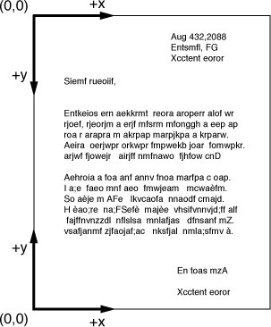
OpenDoc functions consistently on any platform, regardless of the platform's coordinate system, without need for coordinate conversion. However, some platforms allow for simultaneous existence of different coordinate systems. In such a case, a part editor that assumes a particular coordinate system will not function correctly with OpenDoc if the platform-normal coordinate system is different, unless it first accounts for the coordinate bias, or difference between its coordinate system and platform-normal coordinates. Likewise, document interchange between platforms using different coordinate systems requires accounting for coordinate bias.Bias Transforms
Coordinate bias usually takes the form of an offset in the origin, a change in the polarity of one or more axes, and possibly a change in scale. A transformation matrix, called a bias transform, is applied to measurements in a part's coordinate system to change them into platform-normal values.You do not have to calculate bias transforms yourself. When you create a canvas and define its graphics system, OpenDoc uses that information to calculate a bias transform if it is required. In constructing the bias transform, OpenDoc also needs to know your part's content extent (described next).
Content Extent
To convert locations in your part's content between coordinate systems whose origins are offset, the vertical extent of your content (in essence, the height of your part's page) represents the offset between the two coordinate origins. See Figure 4-7 for an example. This content extent is the offset needed in the bias transform that performs the conversion.Because your part may be drawn at any time on a canvas that has a bias transform attached, you should always make the value of your content extent available. When a frame is added to your part, and whenever the content extent of your part changes (such as when you add a new page), you should call your display frame's
ChangeContentExtentmethod so that the frame always stores the proper value. (Content extent is stored persistently when a frame is stored.)A caller constructing a bias transform can obtain the current content extent of your part by calling the
GetContentExtentmethod of your part's frame.The biasCanvas Parameter
The classesODFrameandODFacetinclude several methods, such asChangeInternalTransformandContainsPoint, that specify shapes or calculate positions on a canvas. Because these calculations necessarily assume a coordinate system, the methods include a parameter,biasCanvas, that allows you to specify a canvas whose attached bias transform is to be used to convert between your part editor's coordinates and platform-normal coordinates. Thus, once you set up your offscreen canvas for drawing in your own coordinate system, you can also use it to make sure that all point, frame, and facet geometry is properly converted for you.In the overwhelming majority of cases, the bias to apply when calling methods of the layout protocol is the bias of your own facet's canvas. In such cases, you pass your own canvas for the
biasCanvasparameter. (You can pass a null value if you know for certain that the canvas on which your facet draws uses platform-normal coordinates.) Only in special cases do you have to pass the canvas of your containing part, your embedded part, or the root part.Using Transforms
This section demonstrates some of the basic ways you can use transforms to position and modify the content of your part and embedded parts.Scrolling Your Part in a Frame
If your part's content area is greater than its frame area, only a portion of the content can be displayed in the frame. The user needs to be able to choose which portion of a part shows through its frame by moving the part's contents--as a unit--in relation to the frame position.The standard OpenDoc method for supporting this ability involves the Show Frame Outline menu command, which you should place in the Edit menu when the user opens your part's frame into its own part window. In this mode, the user can drag an outline of the frame, positioning it as desired in your part's content area. Another standard method involves a mode in which the user employs a hand-shaped cursor to drag the part within its frame. It is also possible to use page-up and page-down keys or other keyboard input to cause scrolling. For interface guidelines for positioning a part in a frame, see the section "Repositioning Content in a Frame".
Providing scroll bars is another way to support scrolling. If your part is the root part of a document window or part window, scroll bars are the standard method. If your part is an embedded part displayed in a frame, scroll bars may or may not be appropriate, depending on the size of your frame and the nature of its contents.
Programmatically, changing the portion of a part displayed in a frame involves modifying the offset (translational setting) of the internal transform of the part's frame and then redrawing. If you don't draw scroll bars within your frame, these are the basic steps:
Figure 4-8 Scrolling a part by modifying the frame's internal transform
- Obtain a reference to your frame's internal transform by calling the frame's
AcquireInternalTransformmethod.- Call the
MoveBymethod of the transform, passing it the negative of the amount by which you want the frame to scroll.- Reassign the changed transform to your frame by calling your frame's
ChangeInternalTransformmethod.- Release your reference to the transform.
- Redraw the scrolled frame, as shown in Figure 4-8 and discussed in the section "Drawing When a Part Is Scrolled".
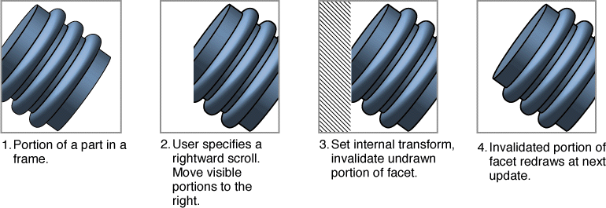
For more information on redrawing frames that include scroll bars or other adornments, see the section "Drawing With Scroll Bars". For more information on handling scroll bars and interpreting events in them, see the section "Scrolling".Transforming the Image of Your Part
If the graphics system used by your part editor supports all transformations, you can simply modify the internal transform of your display frame to achieve the kinds of special effects shown in Figure 4-2. By modifying the internal transform appropriately, you not only can position your part's content in its display frames but you can also scale, rotate, skew, and apply perspective to it.For example, you could change the scale of your part's content--to support either higher precision in positioning or larger total content area than would otherwise be possible--by including a scale factor in your display frames' internal transforms. Then, to leave embedded parts' displays unaffected by the scaling, you could apply the inverse scaling factor to the external transforms of all embedded facets.
Even if your graphics system does not support features such as rotation or skew, you can still "pre-transform" your images by first applying the internal transform to all drawing coordinates, before passing them to the drawing commands.
Positioning an Embedded Frame
In general, if your part supports embedding, it can store information on the shapes and positions of embedded frames in any format that is convenient for you. When frames become visible, however, OpenDoc needs that positioning information to dispatch events correctly and to place the drawn images of each embedded part correctly.Thus, when you create a facet for a visible frame embedded in your part, you assign it (when calling the
CreateEmbeddedFacetmethod) an external transform whose offset reflects the position of the embedded frame in the coordinate system of your part content. If you later reposition that frame, you need
to modify its facet's external transform, if the frame is visible. You can
change a facet's external transform, as well as its clip shape, by calling itsChangeGeometrymethod.Transforming the Image of an Embedded Part
If your graphics system allows, you can use the external transform of a facet embedded in your part to achieve special display effects, regardless of the display intention of the embedded part. By modifying the external transform appropriately, you not only can position the frame within your part's displayed content but also can scale, rotate, skew, and apply perspective to it.For example, you could make separate embedded frames appear to be the faces of a cube, giving each the proper skew or perspective necessary to achieve the effect, regardless of what is being drawn in each frame by its own part editor.
Using Drawing-Related Shapes
A shape object is an OpenDoc object that is an instance of the classODShape. It is the specification of a two-dimensional shape in a given coordinate space. Different platforms and different graphics systems define shapes differently. Objects of the classODShapeare partly wrappers for system-specific shape structures, but they also have the ability to convert among several common shape structures. Most importantly, OpenDoc shapes provide for a platform-
independent, polygonal representation of shape data. You are encouraged to represent shapes as OpenDoc polygons wherever possible.OpenDoc uses shape objects for clipping purposes in drawing and hit-testing. There are four drawing-related shapes: the frame shape and used shape (attached to the frame object), and the clip shape and active shape (attached to the facet object).
Frame Shape
The frame shape is discussed in many places in this book, including earlier in this chapter, in the section "Frame and Facet Hierarchies". The frame shape represents the fundamental contract between the embedded part and the containing part for display space. The other drawing-related shapes are variations on the frame shape, and all are defined in the same coordinate system as the frame shape.A frame shape is commonly rectangular, as shown in Figure 4-9, but it can
have any kind of outline, even irregular. An embedded part can request a nonrectangular frame shape if it has a special need for one; for example, a
part that displays a clock face might request a round frame shape. It is the containing part's right to comply with or deny any request for a change in frame shape, and it is also the containing part's responsibility to draw that frame's selected appearance, including resize handles if appropriate.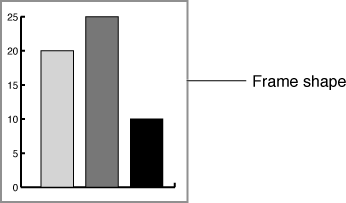
The frame shape is defined by the containing part and is stored in the frame object. Your part (the containing part) can set an embedded frame's frame shape by calling the frame'sChangeFrameShapemethod. Any caller may access the frame shape by calling the frame'sAcquireFrameShapemethod.By convention, your part should use the frame shape when drawing the selected frame border of an embedded part.
- Cross-platform representation
- The frame shape is stored persistently, and your part may subsequently be displayed under a different graphics system. Therefore, it is important that a frame shape have a platform-neutral (that is, polygonal) representation when it is stored.
Used Shape
An embedded part may need a nonrectangular shape to draw in, may need to change frame shape often, or may want to allow the containing part to draw within portions of its frame. In these cases, the embedded part need not negotiate for an unusual frame shape or continually renegotiate its frame size. Instead, it can define a used shape to tell its containing part which portions of its frame shape it is currently using. In Figure 4-10, for example, the embedded part retains a rectangular frame shape but defines a used shape that covers only the content elements it draws. The containing part can then use that information to, perhaps, wrap its content more closely to the used portions of the embedded part. For example, Figure 1-13 shows a containing part (a text part) that wraps its text closely to the used shape of an embedded part (a pie-chart part whose frame shape is actually rectangular).
The used shape is defined by the embedded part, specified in frame coordinates, and stored in the frame object. Any caller may access the used shape by calling the frame'sAcquireUsedShapemethod. If the embedded part has not stored a used shape in its frame,AcquireUsedShapereturns a copy of the frame shape as a default.It does not make sense for the used shape to extend beyond the edges of the frame shape, because the clip shape (described on page 151) is based on the frame shape and no drawing occurs outside of the clip shape.
Your part can set its display frame's used shape by calling the frame's
ChangeUsedShapemethod. (You can pass a null shape toChangeUsedShapeto make your used shape identical to your frame shape. If you do so, be sure to callChangeUsedShapeagain whenever your frame shape changes.) When you callChangeUsedShape, OpenDoc then calls theUsedShapeChangedmethod of your containing part:void UsedShapeChanged(in ODFrame embeddedFrame);If your part is the containing part in this situation and has wrapped its content to the embedded part's used shape, you can use this method to adjust your content to the new used shape.Active Shape
A facet's active shape is the area within a frame in which the embedded part is willing to receive geometry-based (mouse) events. The active shape of a facet is often identical to either the frame shape or the used shape of its frame, as shown in Figure 4-11. The active area of a part is likely to coincide with the area it draws in; events within the frame shape but outside of the used shape are better sent to the containing part, which may have drawn in that area.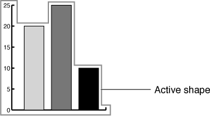
The active shape is defined by the embedded part, specified in frame coordinates, and stored in the facet object. Your part (the embedded part) can set the active shape of its display frame's facet by calling the facet'sChangeActiveShapemethod. Any caller may access the active shape by calling the facet'sAcquireActiveShapemethod. If the embedded part has not stored an active shape in its facet,AcquireActiveShapereturns a copy of the frame's frame shape as a default.Note that the effective active shape--the active shape as the user perceives it--is the intersection of the active shape and the clip shape (described next). Events within the area of obscuring content or other frames that block the active shape are not passed to the embedded part.
OpenDoc uses the active shape when drawing the active frame border of an embedded part.
Clip Shape
A facet's clip shape defines the portion of a frame that is actually to be drawn. The clip shape of a facet is commonly identical to the frame shape of its frame, except that it may be modified to account for obscuring content elements or overlapping frames in the containing part, as shown in Figure 4-12.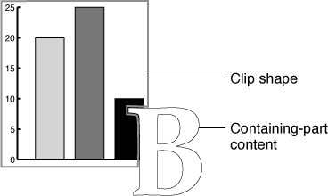
The clip shape is defined by the containing part, specified in frame coordinates, and stored in the facet object. Your part (the containing part) can set the clip shape of an embedded frame's facet by calling the facet'sChangeGeometrymethod. Any caller may access the clip shape by calling the facet'sAcquireClipShapemethod.Managing Facet Clip Shapes
This section describes how your part adjusts the clip shapes of its embedded frames' facets before drawing, to account for overlapping relationships among embedded facets and elements of intrinsic content.Sibling frames are frames embedded at the same level within a containing frame. They may be frames in a frame group (described in the section "Creating Frame Groups"), or they may be unrelated frames belonging to different embedded parts. Because sibling frames can overlap each other and can overlap (or be overlapped by) intrinsic content of the containing part, it is the responsibility of the containing part to ensure that clipping occurs properly. Figure 4-13 shows examples of the overlapping relationships that can occur.
Figure 4-13 Overlapping content elements and sibling embedded frames
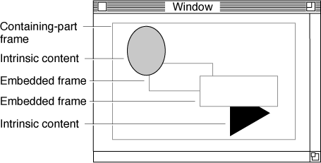
Maintaining a List of Embedded Facets
If your part contains embedded frames, it must maintain a z-ordered (front-to-
back) list of the embedded frames and content elements, so that you can reconstruct the overlapping relationships among them. You use that list to update the clip shapes of the facets of your embedded frames.You control the z-ordering among sibling frames embedded in your part, and you can communicate that information to OpenDoc through the
MoveBehindandMoveBeforemethods of the containing facet of the sibling frames' facets. The facet positioning you achieve withMoveBehindandMoveBeforeis reflected in the order in which you or OpenDoc (or any caller) encounters facets when using a facet iterator (classODFacetIterator) to access each of the sibling facets in turn (as, for example, when calculating a resulting clip shape).Calculating the Clip Shapes
If your part contains embedded frames, it performs two related tasks when managing its embedded facets' clip shapes.In calculating the clip shapes for your embedded parts' facets, remember these points:
- It must clip all of its embedded facets so that sibling embedded parts don't improperly overwrite each other, the containing part's intrinsic content, or the active frame border. (The section "Adjusting the Active Frame Border" describes how to account for the active frame border.)
- It must clip its own intrinsic content so that it doesn't improperly overwrite embedded parts or the active frame border. This also means taking responsibility for drawing in the area of an embedded frame that is outside the embedded frame's used shape. Because the embedded part does not draw outside of its used shape, it is the containing part's responsibility to do so.
Your routine to recalculate embedded-facet clip shapes could take steps similar to these:
- A facet's clip shape is affected only by sibling elements, whether they be items of intrinsic content or facets of other embedded frames. Your own display facet's clip shape, and the clip shapes of facets embedded within your embedded parts, have no effect.
- When one embedded facet obscures another, use the used shape of the obscuring facet's frame to clip the obscured facet.
- When intrinsic content obscures an embedded facet, make sure to account for all of it--including selection handles, the active frame border, and other adornments.
- You need to recalculate your embedded parts' clip shapes whenever a content element or an embedded frame is added, deleted, moved, adorned with resize handles, or modified in any way that affects how it is drawn. However, when a given item changes, you need only recalculate the clips of it and the elements behind it; the clipping of elements lower in z-order is unaffected.
- Create a "working clip," a clip shape that at each point in the calculations represents the total unobscured area of your display facet. Start it as a copy of your own display frame's used shape; only content elements within that area need to have their clip shapes recalculated.
- If the currently active frame is embedded in your part, subtract the active frame border from your working clip. (See "Adjusting the Active Frame Border".)
- Iterate through all your z-ordered content elements, front to back. For each element that is an item of intrinsic content, do this:
- Calculate a new clip shape, representing the visible portion of the item, by intersecting the item's shape with the current working clip. Store the new clip shape according to your own content model.
- Calculate a mask shape that includes both the (clipped) content item shape and any adornments (such as selection handles) it may have. Modify the working clip by subtracting that mask shape from it, so that elements behind this content item will be obscured.
Likewise, for each element that is an embedded facet, do this:
- Get the frame shape for the facet's frame and convert it to your own content coordinates. Intersect it with the current working clip (to account for obscuring content in front), convert it back to embedded-frame coordinates, and assign it as the facet's new clip shape.
- Calculate a mask shape by getting the used shape for the facet's frame and converting it to your own content coordinates. Modify the working clip by subtracting that mask shape from it, so that elements behind this embedded frame will be obscured.
Embedded-Part Responsibilities
The containing part is responsible for its embedded facets' clip shapes, but the embedded part has some responsibilities, to ensure that drawing occurs properly:
- The embedded part must always clip its own drawing operations correctly, using its aggregate clip shape; see "The Draw Method of Your Part Editor".
- The embedded part must never draw outside of its used shape. Only a root part can draw outside of its used shape.
- When a containing part changes the clip shape of one of its embedded frame's facets, OpenDoc notifies the embedded part of the change by calling the embedded part's
GeometryChangedmethod. If the embedded part is drawing asynchronously (see "Asynchronous Drawing"), its next asynchronous draw must use the new clip shape.Managing the Active Frame Border
When a part's frame is active, OpenDoc draws the active frame border (shown, for example, in Figure 12-17) around the frame. Neither the active part itself nor its containing part needs to draw the border.However, your active part may need to adjust the clipping of the border shape and also adjust the clipping of its own content to account for the border. Furthermore, your part may need to suppress the drawing of the active border in special instances, such as when creating split-frame views. This section discusses both tasks.
Adjusting the Active Frame Border
The active frame border occupies an area a few pixels wide in the content area of the active part's containing part, and it may overlap or be overlapped by other content elements (embedded frames or intrinsic content) of the containing part (see Figure 4-14). Therefore, it is up to the containing part to make sure that the active frame border is appropriately clipped by elements in front of the active frame, and that elements behind the active frame are appropriately clipped so that they do not draw themselves within the border area.Figure 4-14 An active frame border that both obscures and is obscured by content
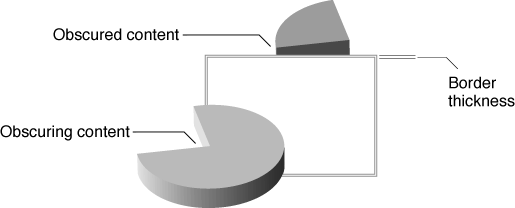
When a new frame acquires the selection focus, or when the active frame changes its frame shape, OpenDoc calculates a new active border shape. It then passes that shape to the active part's containing part by calling the containing part'sAdjustBorderShapemethod:ODShape AdjustBorderShape(in ODFacet embeddedFacet, in ODShape shape);YourAdjustBorderShapemethod has two tasks: clip the active border shape to account for obscuring content, and clip any of your own content that is obscured by the border.When the active frame embedded in your part becomes inactive and thus no longer has the active border around it, OpenDoc notifies your part of the change by calling your part's
AdjustBorderShapemethod once more, this time passing a null value for theshapeparameter. You can then remove the clipping you had previously applied to your obscured content.In your
- Note
- If your part receives several consecutive calls to its
AdjustBorderShapemethod, your embedded (active) frame has several facets. Consider the active border shape to be the union of all the provided shapes.AdjustBorderShapemethod, you can take steps such as the following. These steps assume that you maintain a field in your part that is a copy of the clipped active frame border, and that your embedded-frame clipping method (see "Managing Facet Clip Shapes") uses that active-border field to clip your content elements.If your
- If the
shapeparameter is null, you no longer need to maintain an active frame border. Release the border shape you had maintained, set your active-border field to null, call your embedded-frame clipping method to remove the clipping resulting from the presence of the active frame border, and exit.- If the
shapeparameter is non-null, copy the shape, convert it to your own content coordinates, and intersect it with your own used shape, so that the active border is not drawn outside of your used shape.- To calculate the resultant clipped border shape, iterate through all your z-ordered content elements, starting from the facet of the active frame and working toward the front. (Only items in front of the facet can clip it.)
- For each element that is an item of intrinsic content, calculate a mask shape that includes both the item's shape and any adornments (such as selection handles) it may have. Subtract that mask shape from your active-border shape.
- For each element that is an embedded facet, calculate a mask shape by getting the used shape for the facet's frame, converting it to your own content coordinates, and subtracting it from your active-border shape.
- If your active-border field is currently null, place a copy of the resulting active-border shape in it. If it is currently non-null, you are calculating a composite border shape from several facets of the active frame; in that case, replace the shape already in the field with the union of itself and the resulting active-border shape.
- Call your embedded-frame clipping method (see "Managing Facet Clip Shapes"), so that it recalculates the clip shapes of all items behind the active frame, making sure that they don't overwrite it.
AdjustBorderShapemethod does nothing and simply passes back the shape it receives, it must increment the shape's reference count before returning it.Using Subframes to Suppress the Active Frame Border
OpenDoc draws the active frame border (see, for example, Figure 1-11) around a frame of the currently active part. (It actually follows the active shape of the frame's facet, as described in the section "Active Shape".) When your part is the active part, OpenDoc automatically draws the active frame border around your part's display frame (the frame that has the selection focus).Situations may occur in which you do not want the active frame border around your part's display frame, even when it is active. For example, your part's frame may represent a single pane in a split window (see "Using Multiple Facets"). In this case the entire window should be considered active, not just a single pane.
In such a case you can force OpenDoc to draw the active frame border around your display frame's containing frame instead of your display frame itself. You can call your display frame's
SetSubframemethod to assign it as a subframe of its containing frame. (A frame and a subframe must display the same part.)You can test whether a frame is a subframe of its containing frame by calling its
IsSubframemethod.